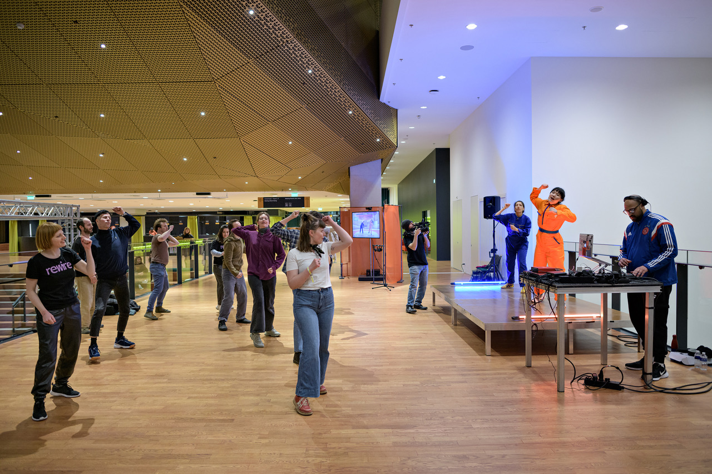
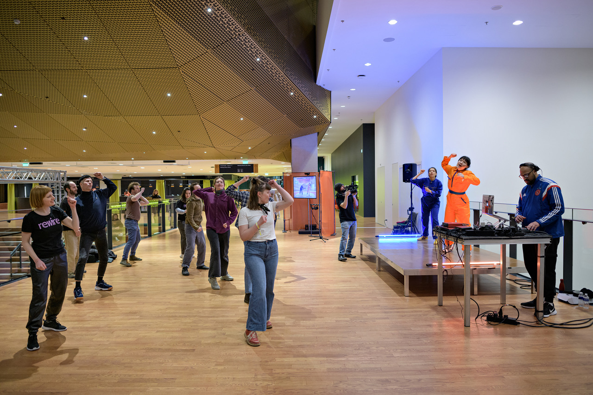

Future Dance of Nostalgia
Future Dance of Nostalgia is a dancing game which invites audience to perform the choreography that extracts and abstracts the movements found in the pre-industrial, heavy physical labour, and work songs. Motion tracking technology allows the body movements to be quantified, measured, and evaluated. Historical archives of work songs provide the inspiration for the music that renders the old tales and melodies into clubbing beats that lead the dance.
Through ethnographic research into work songs and the moving body, the project draws much needed attention to alternative historical archives of our times. The gaming technology, visual, and music, bring people closer to the past through a tangible and modern experience. The work also brings fun and togetherness to audience through public participatory dance sessions and interactive gameplay.
work credits:
Game development: Leonardo Scarin
Choreography: Ludmila Rodrigues
Music: Rachwill Breidel
videography, 3D: Pedro Gossler
Sound mixing: Dima Ibrahim
Work commissioned by iii, conducted during the production residency at iii
Supported by:
Creative Industries Fund NL
the Creative Europe program of the European Union
Stroom Den Haag
Rewire Festival 2022
photo credits:
image 1: Marco Wesche image 2: iii workshop, photo by Francesco Enriquez
image 3~5 & 8: Rewire, photo by Pieter Kers | Beeld.nu
image 6: iii workshop, photo by Helena Roig
image 7: iii workshop, video still by Tanja Busking
presentation:
Rewire Festival, Proximity Music: Sensing After Thoughts
Tec Art
Artist talk Never Ready – A Congress on the Visuality of the Internet. University of Fine Arts Hamburg
Sugar Pop Institute presents: Future Dance of Nostalgia, Boring Festival
ALL GAME NO PLAY, STIFF Festival
Stimuleringsfonds 10 year anniversary
L.E.V Festival MATADERO
featured:
Gonzo Circus: REWIRE 2022 IN TIEN HOOGTEPUNTEN
Neural Magazine: Future Dance of Nostalgia, preserving history through dance


 
